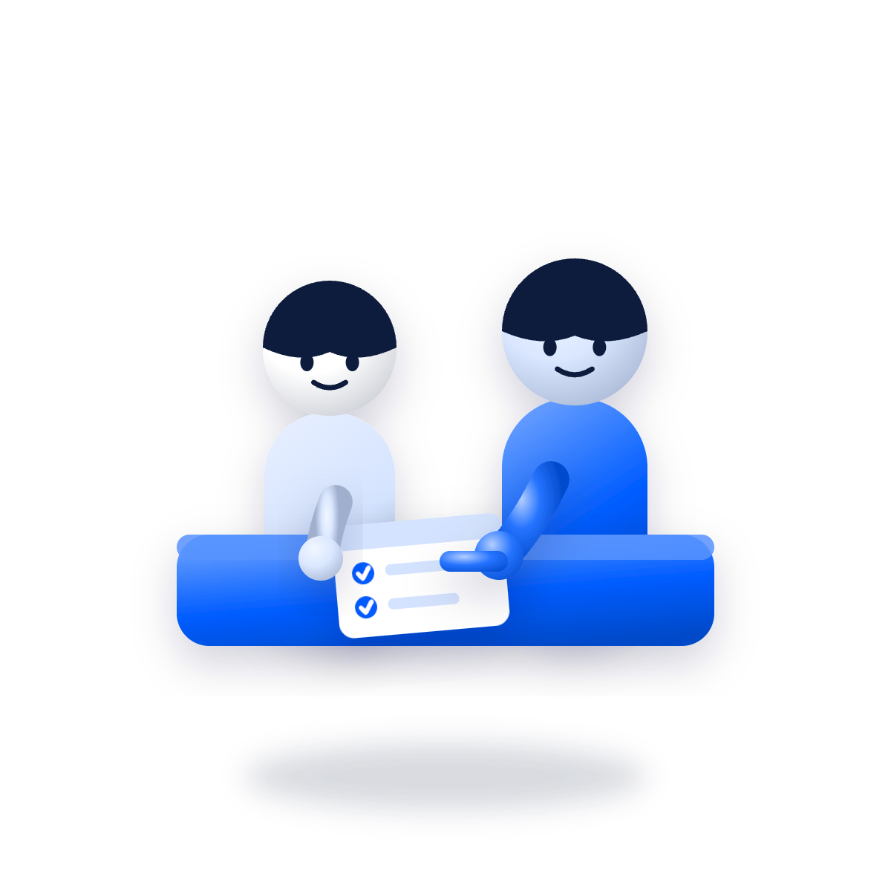

스누코치가 그 시간을 어떻게 관리하는지,
문제 진단부터 매일 1:1 관리까지 전부 보여드립니다.
※ 코치가 누구인지도 모른 채 시작하는 공부

그래서 스누코치는, 반대로 갑니다.
더 많은 학생
🇰🇷 대한민국 최고 수준의 학습코칭
그 하나만 봅니다.
성적을 바꾸는 건 결국, 혼자 있는 시간의 공부입니다.
💬 긴 소개가 부담스럽다면 — 우측 하단 채널톡에
압축 한 마디만 보내주세요.
카톡으로 핵심만 정리해 드립니다 🙌
지금부터, 스누코치의 모든 것을 소개합니다
설치학습코칭쌤 · 스누코치 대표
🎓 서울대학교 치의학과🏅 과학중점고 3년 전교 1등👥 누적 참여 600명+📱 SNS 6만 팔로워🥇 김과외 전체 랭킹 1위
“학원·과외 없이 혼자 공부하며 지독하게 겪은 시행착오를, 제 학생들은 겪지 않았으면 합니다. 그래서 검증된 공부법만, 한 명 한 명에게 직접 전합니다.”
개별 과목 과외로는 성적이 본질적으로 바뀌지 않는다는 걸 깨닫고, 잘되던 과외를 모두 정리했습니다. 남은 답은 하나 — 매일 곁에서 학습 전체를 관리하는 것. 그래서 ‘스스로 공부하는 힘’을 기르는 학습코칭을 시작했고, 지금은 기수마다 5~10명만 직접 코칭합니다.
“chase excellence”
현재 상태와 고민을 듣고 방향을 잡습니다.
학습 상태를 진단하고 맞춤 전략을 설계합니다.
과목·시간을 학생에 맞게 배분한 플래너를 만듭니다.
플래너 점검과 질의응답을 매일 정오 전 제공합니다.
한 달의 변화를 정리해 학부모님께 전달합니다.


학원은 진도를 나가고, 스누코치는 ‘스스로 공부하는 힘’을 기릅니다. 매일의 계획·실행·피드백을 1:1로 관리해 혼자 있는 시간의 공부를 바꿉니다.
매일 카카오톡 플래너 점검과 정기 화상 컨설팅으로 오히려 오프라인보다 촘촘하게 관리됩니다. 각종 인증·질의응답도 매일 이루어집니다.
네. 모든 코칭과 상담은 서울대 치의학과 대표가 직접 진행합니다. 익명 코치 매칭이 없고, 기수마다 5~10명만 받는 이유이기도 합니다.
프로그램별 구성과 환불 기준은 유의사항·환불 기준 페이지에서 확인하실 수 있습니다. 첫 상담은 무료이며, 상담 후 결정하시면 됩니다.
첫 상담은 무료입니다. 부담 없이 우리 아이 학습 상태를 진단받아 보세요. 대표가 직접 관리하기에 기수마다 5~10명만 모집합니다.
첫 상담은 무료입니다. 대표가 직접 학습 상태를 진단해 드립니다.
🔒 대표가 직접 관리하기에 기수마다 5~10명만 모집합니다.